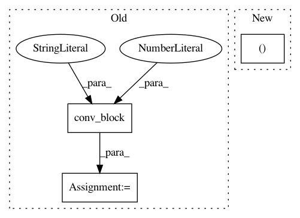

53f15232ed13154bc5338dc002b43c3c62547ea7,dataset/models/tf/unet.py,UNet,upsampling_block,#Any#Any#Any#Any#,165
Before Change
layout = "cnacna" if "batch_norm" in kwargs else "caca"
with tf.variable_scope(name):
x = conv_block(dim, inputs, 2*filters, 3, layout, "conv", **kwargs)
x = conv_block(dim, x, filters, 2, "t", "transposed", strides=2, **kwargs)
return x
After Change
x = conv_block(x, filters, 2, layout="t", name="upsample", strides=2, **kwargs)
x = cls.crop(x, skip, data_format=kwargs.get("data_format"))
axis = -1 if kwargs.get("data_format") == "channels_last" else 1
x = tf.concat((skip, x), axis=axis)
x = conv_block(x, filters, 3, layout="cnacna", name="conv", **kwargs)
return x
In pattern: SUPERPATTERN
Frequency: 3
Non-data size: 3
Instances
Project Name: analysiscenter/batchflow
Commit Name: 53f15232ed13154bc5338dc002b43c3c62547ea7
Time: 2017-11-12
Author: rhudor@gmail.com
File Name: dataset/models/tf/unet.py
Class Name: UNet
Method Name: upsampling_block
Project Name: analysiscenter/batchflow
Commit Name: 5bfdba356f31723366a17dbc2421f345c9273199
Time: 2017-11-28
Author: rhudor@gmail.com
File Name: dataset/models/tf/resnet.py
Class Name: ResNet
Method Name: block
Project Name: analysiscenter/batchflow
Commit Name: 53f15232ed13154bc5338dc002b43c3c62547ea7
Time: 2017-11-12
Author: rhudor@gmail.com
File Name: dataset/models/tf/unet.py
Class Name: UNet
Method Name: body